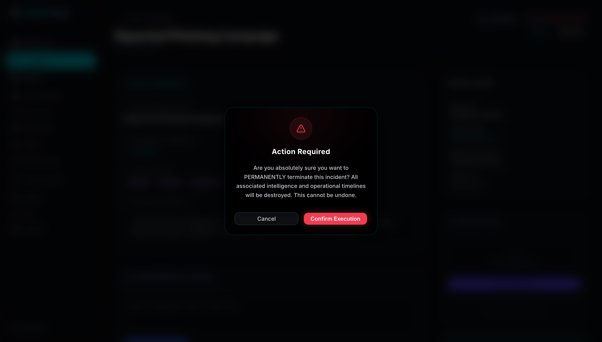
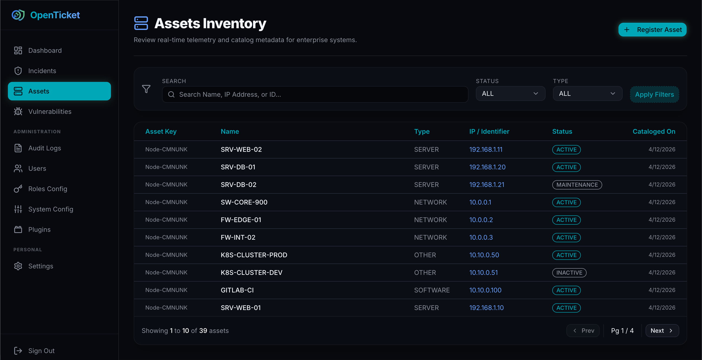

Engineered for Hostile Environments
OpenTicket abandons legacy bottlenecks. We've shifted our core protective boundaries to the network edge and decoupled massive logging queries into optimal indexing engines.
Absolute Zero-Trust Edge Perimeters
Volumetric DDoS shouldn't crash your Database. Incoming unauthenticated payloads are proactively intercepted by the Next.js Edge Middleware, dropping connection streams strictly before they even touch the core Node.js runtime.

Native Postgres Full-Text Search
We eliminated catastrophic O(N) `%LIKE%` lookups. OpenTicket now parses multi-million row SIEM logs directly onto strictly indexed tsvector/tsquery PostgreSQL engines, boosting incident timeline rendering speeds.
Massive Scale Log Reduction
Asynchronous UI Transactions
Ripped out volatile synchronous browser OS-blocks (window.alert). Triage destructive events (like bulk threat deletions) via seamless, non-blocking React Shadcn Portaled Dialogs that protect your UI loop.

AWAITING FILE: docs/assets/incident-dialog.pngDNS Rebinding Immunity & Asset Tracking
Map your active Servers and end-user Workstations dynamically. When Webhooks fire against your environments, OpenTicket's SSRF protection rigidly strips abstract hosts and resolves explicit IPv4 mappings in-memory—preventing malicious Internal VPC pivoting (TOCTOU attacks).

AWAITING FILE: docs/assets/asset-inventory.pngBotnet-Decoupled Credential Defense & Plugins
We've completely severed abstract IP enumeration tracking from absolute Identity Authorization pipelines. The in-memory Rate Limiting algorithm seamlessly restricts dispersed zombie-nets without arbitrarily locking out legitimate operators on shared organizational NATs.
// M2M Automation / SOAR Direct Injection API
curl -X POST https://soc.openticket.local/api/incidents \
-H "Authorization: Bearer ot_secv2_ab12c3" \
-H "Content-Type: application/json" \
-d '{
"title": "Critical SSRF Attempt Overriden",
"severity": "CRITICAL",
"assetIds": ["req_a45b_29"]
}'